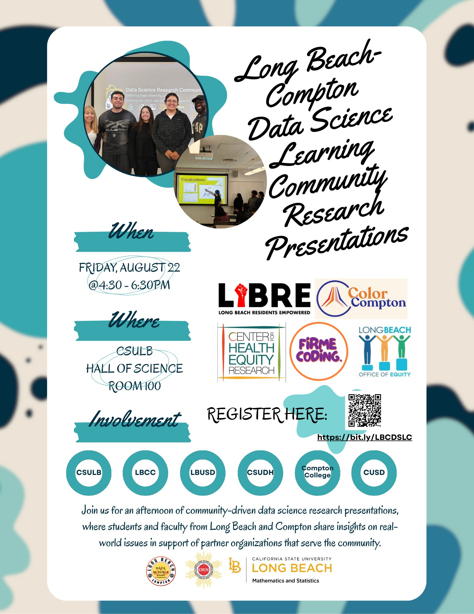

LiBRE's housing justice platform began as a graduate research project in 2019 and grew into a citywide public tool — built by tenants, organizers, analysts, and student contributors working alongside the renters this work serves.
LiBRE connects renters with the tools, knowledge, and power to fight for housing justice in Long Beach and beyond. Through 40+ workshops, LiBRE has reached 18,000+ renters and advocated $2M for eviction defense, while leading research, policy work, and community organizing across the city.
wearelbre.org →The National Association for Latino Community Asset Builders is a network of mission-driven organizations advancing housing, finance, and economic equity in Latino communities. NALCAB provided the initial grant that funded LiBRE's housing violations data work and the public-facing data platform.
nalcab.org →The Los Angeles Alliance for a New Economy organizes coalitions of community groups, labor, and faith leaders to advance economic justice. LiBRE and LAANE are collaborating on data and analysis for the Block the Cuts campaign — a Long Beach parcel tax proposal to fund affordable housing, emergency services, and infrastructure, sponsored alongside the Long Beach Firefighters Association.
laane.org →The Department of Geography at California State University, Long Beach is the academic home where this project began — the MSGISci program produced the original 2019 thesis work and has continued to be a source of student researchers and faculty collaborators advancing housing justice through applied GIS.
csulb.edu/department-of-geography →A multi-organization data science research program connecting students from CSULB, CSUN, Compton College, LBCC, LBUSD, and CUSD with community partners including LiBRE, Color Compton, Center for Health Equity Research, Firme Coding, and the Long Beach Office of Equity. LiBRE hosts annual student research projects through the network.
See the team ↓Leading LiBRE's mission to advance housing justice through organizing, policy advocacy, and community empowerment across Long Beach.
Builds and maintains LiBRE's data platform — from the interactive maps and eviction dashboards to ownership analysis, Census visualizations, and the public Hub site.
Leads the Long Beach Community Land Trust's work to create permanently affordable, community-owned housing and prevent displacement — in close coordination with LiBRE.
Provides academic guidance, board-level oversight, and the connection to CSULB Geography — advising on research methodology, student collaborations, and the broader academic dimensions of LiBRE's data work.
Beyond LiBRE staff and our partner network, individual student contributors are actively building specific projects within the platform. Each is credited here by name and project so their work is findable beyond graduation.
Building a citywide dashboard surfacing environmental impacts on Long Beach communities — including air quality indicators and other environmental health data layered over census and housing geographies.
Producing maps and spatial analysis in support of Long Beach CLT's acquisition, organizing, and outreach work — helping identify properties, parcels, and neighborhoods most aligned with the community land trust model.

A six-student research cohort — faculty-guided, community-partnered — that spent summer 2025 turning LiBRE's housing data into spatial analyses, hotspot maps, and policy questions. Their work explored eviction rates against historical redlining, rent burden distribution, opportunity zone outcomes, and the community storytelling behind the numbers.
The DSLC is a multi-institution program connecting students with community partners. The full network includes Color Compton, the Center for Health Equity Research, Firme Coding, the Long Beach Office of Equity, and faculty from CSULB and CSUN.
Advised the summer 2025 cohort's housing research projects with LiBRE, coordinating methodology, supervision, and the final presentations across all four research tracks.
Spatial overlay of eviction filings against 1939 HOLC redlining maps and 2020 Census demographic data — testing the relationship between historic disinvestment and present-day eviction concentration during and after COVID-19.
"You can evict people, not memories." A narrative track translating the eviction data into community-facing storytelling about displacement, memory, and the people behind the filings.
Mapping changes in the overall distribution of rental contracts over time using Zillow listings, ACS data, and historical redlining boundaries — with simulated data filling gaps where historical contract data sits behind paywalls.
Examining whether housing policies like Opportunity Zones, ADU laws, and density bonuses actually increase development and affordability in Long Beach — comparing housing permit trends in policy-targeted versus non-targeted areas.
In fall 2019, two CSULB MSGISci students — Ali Kazmi and Salena Tach — set out to solve a specific problem: Long Beach had no public way to track which rental properties had histories of code violations or eviction filings. Their graduate thesis became the city's first interactive housing-conditions map — the seed of everything that followed.
In June 2022, LiBRE hired Kevin O'Sullivan, another CSULB MSGISci graduate, to expand that initial work into a full data and mapping program — supported by an early grant from NALCAB to build out tenant-facing tools, dashboards, and the underlying violations dataset.
The modern public-facing platform launched in 2023, debuting at LiBRE's first community night. What had begun as a single map is now a network of dashboards, datasets, and analyses — eviction filings, ownership patterns, district statistics, housing conditions — built to put information in the hands of the renters who need it most.
This page grows as new students and partner projects come online. If you contributed to LiBRE's data work and don't see yourself credited here, let us know — everyone who builds with us deserves to be findable. In the meantime, explore our work on the GIS Hub or learn more about LiBRE.